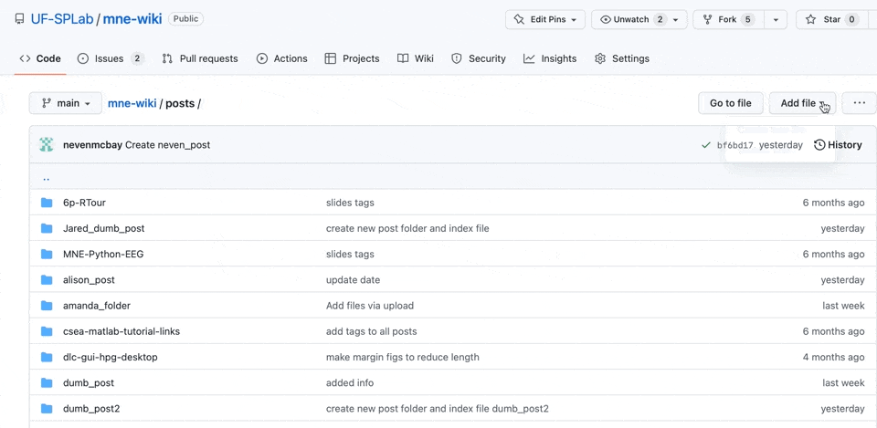

Converting Markdown Syntax
Markdown is a markup coding language that can be used to convert content written in a plain-text format into HTML. It can be used on Github to make easy to read webpages: like the one you’re reading now!
Starting Your Article in Markdown
The first thing you should do when creating any article is filling out the most basic information:
| ```{yaml, eval=false} |
|---|
| title: “Write the title of your article in quotes” |
| author: your name goes here! |
| description: what is your article about? briefly summarize it |
| date: write the date that you publish your article |
```
As shown above, you are always going to put these four basic pieces of information between a pair of three dashes. While the title, author, description, and date are always going to be in the section, you also have the option to add categories to this section: categories: [put your category names in a pair of brackets, seperate each category with a comma] Categories allow us to organize the articles on this wiki by topic. When you open the wiki, you will see a list of categories on the right-hand side. When you click on a category, you will be able to see any of the articles tagged with that specific category in the manner depicted above.
Formatting in Markdown Syntax
In addition to setting up important information about your article, markdown can be used to format your main body of text in a number of ways…
You can create a header by using a pound sign: # Heading
You can make a subheading, a sub-subheading, and onwards just by adding more pound signs: ## Subheading ### Sub-subheading
You can italicize or bold a sentence using asterisks: *This sentence is italicized* **This sentence is bolded**
Links and images can be inbedded like so: !(text)[link]
Its also possible to inbed code directly into the text - but we’ll be going over that later.
Importance of YAML
Quarto
Creating a Folder
In order to create an article, you first have to create a folder in which you will create an index.qmd file. The index.qmd file is where you will be writing in Markdown to create your article. The process of folder creation is depicted in the gif below. 